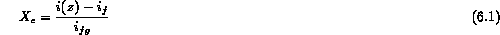

Consider the case of a vertical tube heated uniformly over its length with a known heat flux and with subcooled liquid entering at its base. This prescribed heat flux boundary condition for a one dimensional situation is the simplest case for our consideration. More complex situations can subsequently be explained. At some mass flowrate the liquid may be totally evaporated over the length of the tube. Figure 6.1 shows a conceptual picture of the various flow patterns encountered over the tube length, the qualitative temperature profile, together with the corresponding heat transfer regions.
As the liquid is being heated to its saturation temperature and the wall temperature remains below the condition necessary for nucleation, heat transfer is single-phase convective heat transfer to the liquid (Region A). At some point along the tube, the condition adjacent to the wall allows the stable formation of vapor from wall nucleation sites. Initially, vapor formation takes place in the presence of subcooled liquid (Region B) and this heat transfer region is known as subcooled nucleate boiling. In the subcooled nucleate boiling region, (B), the wall temperature remains essentially constant a few degrees above the saturation temperature, while the mean bulk fluid temperature is increasing to the saturation temperature. The amount that the wall temperature exceeds the saturation temperature is known as the degree of superheat, , and the difference between the saturation and the bulk fluid temperature is known as the degree of subcooling,  .
.
The transition between regions B and C, the subcooled nucleate boiling region and the saturated nucleate boiling region, is clearly defined from the thermodynamic viewpoint. It is the point at which the liquid reaches the saturation temperature (thermodynamic equilibrium quality,  = 0) found on the basis of a simple energy balance calculation. Vapor generated in the subcooled region is present at the transition between regions B and C (
= 0) found on the basis of a simple energy balance calculation. Vapor generated in the subcooled region is present at the transition between regions B and C (  = 0); thus, some of the liquid must be subcooled to ensure that the liquid bulk (mixing cup) enthalpy equals that of saturated liquid. This effect occurs as a result of the transverse temperature profile in the liquid and the subcooled liquid flowing in
the center of the channel will only reach the saturation temperature at some distance downstream of the point,
= 0); thus, some of the liquid must be subcooled to ensure that the liquid bulk (mixing cup) enthalpy equals that of saturated liquid. This effect occurs as a result of the transverse temperature profile in the liquid and the subcooled liquid flowing in
the center of the channel will only reach the saturation temperature at some distance downstream of the point,  = 0. In the regions C to G, a variable characterizing the heat transfer mechanism is the thermodynamic mass "quality" (
= 0. In the regions C to G, a variable characterizing the heat transfer mechanism is the thermodynamic mass "quality" (  ) of the fluid. The "quality" of the liquid-vapor mixture at a distance, z, is given on a thermodynamic basis as:
) of the fluid. The "quality" of the liquid-vapor mixture at a distance, z, is given on a thermodynamic basis as:

As the quality increases in the saturated nucleate boiling region a point may be reached where transition in the heat transfer mechanism occurs. The transition occurs between the process of "boiling" and the process of "evaporation". This transition is preceded by a change in the flow pattern from bubbly or slug flow to annular flow (regions E and F). In the latter regions the thickness of the thin liquid film on the heating surface is often such that the effective thermal conductivity is sufficient to prevent the liquid in contact with the wall being superheated to a temperature which would allow bubble nucleation. Heat is carried away from the wall by forced convection in the film to the liquid film-vapor core interface, where evaporation occurs. Since nucleation may be completely suppressed, the heat transfer process may no longer be called "boiling". The region beyond the transition has been referred to as the two-phase forced convective region of heat transfer (Regions E and F).
For the example described above the critical heat flux condition occurs at some critical value of the quality, where the complete evaporation of the liquid film occurs. This particular CHF transition is known as "dryout" and is accompanied by a rise in the wall temperature for channels operating with a controlled surface heat flux. The area between the dryout point and the transition to saturated vapor (Region H) has been termed the liquid deficient region (corresponding to the drop flow pattern) (Region G), where post-CHF heat transfer occurs. This condition of "dryout" often puts an effective limit on the amount of evaporation which can be allowed to take place in a channel at a particular heat flux.
It is also useful to qualitatively describe the progressive variation of the local wall surface temperature (or local heat transfer coefficient) along the length of the tube for this prescribed heat flux boundary condition. The local heat transfer coefficient can be established by dividing the surface heat flux (constant over the tube length) by the difference between the wall temperature and the bulk fluid temperature. Typical variations of these two temperatures with length along the tube are shown in Figure 6.1. The variation of heat transfer coefficient with length along the tube for the conditions represented in Figure 6.1, is given in Figure 6.2 (curve(i), solid line). In the single-phase convective heat transfer region, the wall temperature is displaced above the bulk fluid temperature by a relatively constant amount, (the heat transfer coefficient is approximately constant) and is modified only slightly by the influence of temperature on the liquid physical properties. In the subcooled nucleate boiling region the temperature difference between the wall and the bulk fluid decreases linearly with length up to the point where x = 0. The heat transfer coefficient, therefore, increases linearly with length in this region. In the saturated nucleate boiling region the temperature difference and, therefore, the heat transfer coefficient, remains constant. Because of the reduced thickness of the liquid film in the two-phase forced convective region the difference in temperature between the surface and the saturation temperature decreases and the heat transfer coefficient increases with increasing length or mass quality. At the CHF point the heat transfer coefficient decreases dramatically from a very high value in the forced convective region in a value near to that expected for heat transfer by forced convection in saturated steam. As the quality increases through the liquid deficient region, so the vapor velocity increases and the difference in temperature between the surface and the saturation value decreases with a corresponding rise in the heat transfer coefficient. Finally, in the single-phase vapor region ( ) the wall temperature is once again displaced by a constant amount above the bulk fluid temperature and the heat transfer coefficient levels out to that corresponding to convective heat transfer of a single-phase vapor flow.
Now consider the other boundary condition of a vertical tube heated by a uniformly constant temperature along its length with an inlet subcooled liquid flow. The situation once again will cause the entering liquid to 1) nucleate on the heated wall, 2) reach saturation at some downstream axial location, and 3) begin bulk boiling. The difference in this case is that the heat flux will vary along the channel, although the overall multiphase flow regimes would the same (Figure 6.3). The realistic situation may become more complex for a horizontal flow orientation or for the heating surface becoming non-uniformly heated or with rod bundles. Nevertheless, the general methodology does not change. Throughout our discussion here we focus on an approximately one-dimensional flow orientation.
The above comments have been restricted to the case of a relatively low uniform heat flux supplied to the tube wall. The effect of progressively increasing the surface heat flux while keeping the inlet flow-rate constant, can now be considered with reference to Figures 6.2a and 6.2b. Figures 6.2a shows the heat transfer coefficient plotted against mass quality with increasing heat flux as a parameter (curves (i,ii)). 6.2b shows the various regions of two-phase heat transfer in forced convective boiling on a three-dimensional diagram with heat flux, mass quality and temperature as co-ordinates-"the boiling surface," Curve (i) relates to the conditions shown in Figure 6.1 for a low heat flux being supplied to the walls of a tube. The temperature pattern shown in Figure 6.1 will be recognized as the projection (temperature-quality co-ordinates) of curve (i). Curve (ii) shows the influence of increasing the heat flux. Subcooled boiling is initiated sooner, the heat transfer coefficient in the nucleate boiling region is higher but is unaffected in the two-phase forced convective region. Dryout CHF occurs at a lower mass quality. Curve (iii) shows the influence of a further increase in the heat flux. Subcooled boiling is initiated earlier and the heat transfer is again higher in the nucleate boiling region. As mass quality increases, before the two-phase forced convective region is initiated, and while bubble nucleation is still occurring, a large reduction in the cooling process takes place. This transition is essentially similar to the critical heat flux phenomenon in saturated pool boiling and has been termed "departure from nucleate boiling" (DNB).